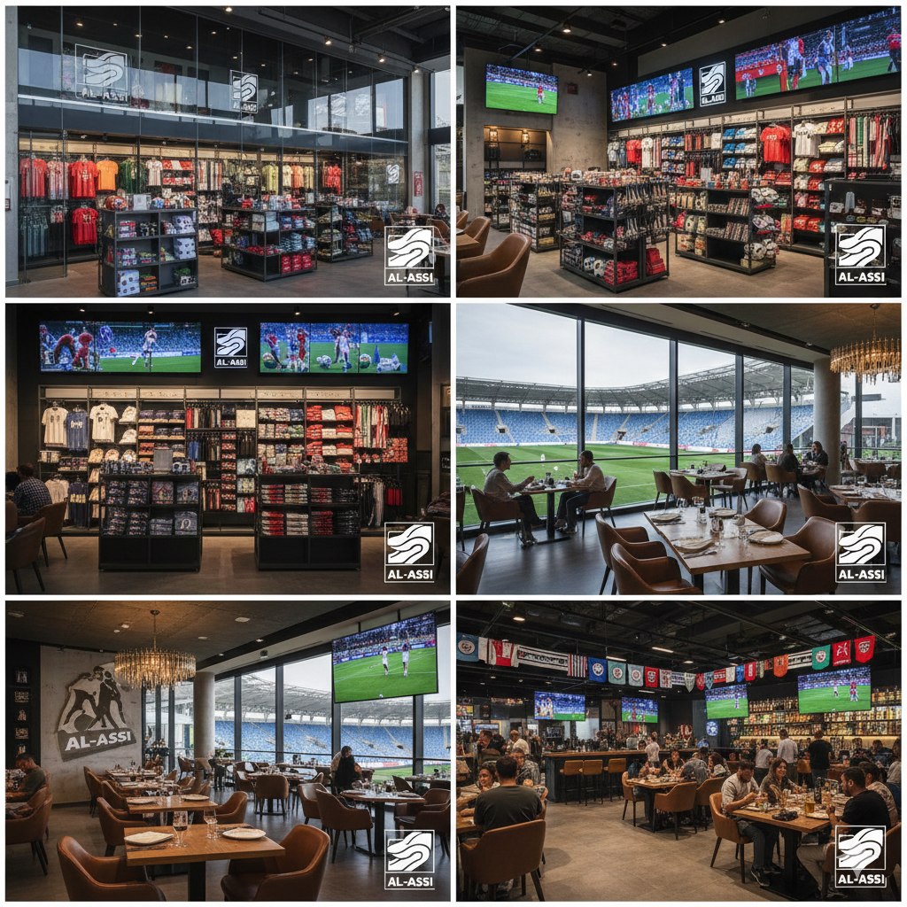

مرافق وتجهيزات ملعب العاصي الرياضي


يستوعب ملعب العاصي الرياضي آلاف المشجعين، مع ترتيب مدرجات مريح يضمن رؤية واضحة لكل الجماهير، ومقاعد مخصصة للعائلات والضيوف.
تم تجهيز الملعب بأحدث أنظمة الإضاءة لتسهيل إقامة المباريات في الفترة المسائية، كما تم تركيب شاشات عرض كبيرة لمتابعة أحداث المباراة وعرض الإعلانات والمعلومات الهامة للجماهير.
يحتوي الملعب على مجموعة من المرافق المهمة، منها: